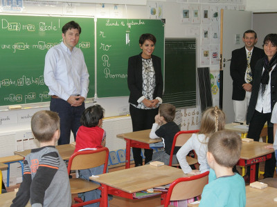
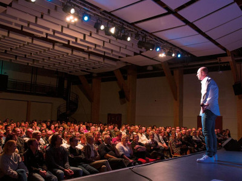

Quiproquo autour de la visite de Mme Vallaud-Belkacem

Le 23 août dernier, la Direction du CMI apprenait dans nos colonnes la visite de la ministre
de l'éducation nationale Najat Vallaud-Belkacem à Besançon, initialement pour assister le 5 septembre
à la rentrée des CMI.
Tout le monde s'était mis sur son 31, tous prêts à recevoir comme il se doit notre ministre de tutelle :
discours du préfet, du président de l'UFC, du directeur du collegium CMI, petits fours, champagne et
feu d'artifice devaient ponctuer une journée qui s'annonçait des plus prometteuses.
Or, tout ce beau monde a rapidement déchanté :
On était tous prêts devant l'entrée de l'UFR ST route de Gray, on avait mis nos plus beaux
costumes, et on attendait le cortège de la ministre qui arrivait de la gare Franche-Comté TGV
par le train de 9h32. Vers 9h50, on a vu cet impressionnant flot de véhicules débouler de
l'extrémité de la route de Gray
mais au lieu de tourner sur le rond-point pour rejoindre le domaine universitaire, ils sont
passés tout droit, ils ont longé les Beaux-Arts, et ils sont partis en direction du centre-ville.
Passées la stupeur et l'incompréhension, le coupable a été trouvé. Notre typographe, responsable
du choix des polices de caractères s'est révélé être à l'orgine de ce quiproquo :
On avait fait l'essai d'utiliser la police de caractère "futura" pour notre édition annonçant
la venue de la ministre. Or, dans cette police, le chiffre 1 ressemble comme deux gouttes d'eau
à un i majuscule ! La ministre venait donc faire la rentrée du CM1 et non du CMI ! Je ne suis
quand même pas responsable du fait que les gens ne lisent pas correctement les énoncés !
Maxime Jacquot, qui a dû ranger son discours écrit par sa plus belle plume, commente :
En même temps, cela m'étonnait qu'on annonce qu'elle allait faire la rentrée du CMI à l'école
élémentaire de la Butte, mais on a tous cru que c'était une erreur du journal. Ils en font si
souvent.
La rédaction de notre journal a fait amende honorable, et a aidé à se débarrasser
des petits fours et du champagne. Le feu d'artifice sera, lui, conservé pour fêter
l'obtention du label EUR-ACE par les CMI de l'Université.
Enquête : sur la piste des clés USB "oubliées" en salles TP
Jeudi dernier, Marie (le prénom a peut-être été modifié pour préserver son anonymat) a découvert
une clé USB oubliée sur le poste où elle travaillait en salle de TP dans le bâtiment de Propédeutique.
Au lieu de la ramener à la responsable des salles machines, comme il est coutume de le faire dans ces
cas-là, Marie a choisi, inconsciemment, d'amener cette clé chez elle pour en examiner le contenu.
Au début, je voulais juste voir la capacité de stockage, en me disant que si elle faisait plus de 8 Go,
je pourrais la garder, car c'est pratique pour échanger des saisons de Game of Thrones avec mes profs.
J'ai donc inséré la clé dans mon ordi, et là, je n'ai pas compris ce qui s'est passé : j'avais à peine
double-cliqué sur l'icône du lecteur USB que mon ordi s'est figé. Plus aucune commande ne répondait.
J'ai essayé quelques combinaisons de touches habituelles (échap, ctrl+c, ctrl+alt+suppr,
haut-haut-bas-bas-gauche-droite-gauche-droite-b-a-start), mais rien n'y faisait. Finalement,
j'ai éteint l'ordinateur.
Malheureusement, le mal était déjà fait. Un virus présent sur la clé s'était répandu insidieusement
et avait commencé à explorer et exploiter les données personnelles de Marie.
Comme l'ordinateur était connecté automatiquement à Internet, cette saleté a eu le temps d'envoyer
mes données personnelles à l'autre bout du monde !
Quand on lui demande comment elle s'en est rendu compte, la réponse de Marie est des plus surprenantes :
Le lendemain matin, j'ai reçu un message venant de Corée du Nord. Celui-ci cherchait à me rançonner, en menaçant de divulguer les photos de moi en petite tenue qui avaient été récupérées sur mon disque dur si je ne fournissais pas des renseignements sur le CMI Informatique de l'université de Franche-Comté.
Courageuse, Marie ne s'est pas laissée intimider, prenant son corbeau à contre-pied.
Pour couper court à ce chantage ridicule, j'ai diffusé moi-même les photos. D'ailleurs, si vos lecteurs sont intéressés, elles sont visibles à l'adresse : http://bit.ly/2f9Lnq8
Pour cette fois, l'histoire se termine bien, et l'honneur du CMI est, lui, sauf. Mais cette mésaventure nous donne à réfléchir. Nous sommes allés rencontrer le responsable du CMI Informatique, qui s'est montré très intrigué par cette affaire.
Vous m'apprenez des choses graves, c'est très inquiétant… Cela dit, je comprends mieux que, du jour au lendemain, des étudiants qu'on pensait sans histoires se mettent à se comporter de manière étrange.
Il poursuit son raisonnement.
On le voit bien, en salle TP, quand on se balade dans les rangs. Il y a toujours ces étudiants, souvent ceux qui sont sur le rang du fond. Quand on arrive à leur niveau, ils changent rapidement de fenêtre et font semblant de se concentrer sur un écran vide ou sur un sujet de TP, au lieu d'écrire leur programme. C'est désormais clair : ils étaient en train de nous espionner pour le compte des Nord-Coréens !
Nous nous sommes procurés la clé USB qu'avait récupéré Marie, et nous l'avons confiée aux experts sécurité du Département d'Informatique des Systèmes Complexes (DISC) de FEMTO-ST. Ils nous racontent l'analyse réalisée :
Pour éviter tout problème, on a d'abord bien pris soin d'effacer les photos de nous en petite tenue des serveurs. Ensuite, on a isolé une machine du réseau et on a inséré la clé, non sans avoir installé dessus un pare-feu en LaTeX pour ne pas que le virus se répande.
On a trouvé des trésors incroyables sur cette clé. Pour appâter le chaland, et l'obliger à rester connecté le plus longtemps possible, elle contient tous les sujets de projet de bases de la programmation, ainsi que les TP notés avec leur correction. Dès qu'on l'ouvre, le virus démarre un scan du disque, qui s'effectue en un temps record, puis il envoie les données les plus sensibles à un serveur situé à Pyongyang en Corée du Nord. D'ailleurs, heureusement qu'on avait mis le pare-feu, car on avait oublié quelques photos du dernier conseil de perfectionnement qui ont été arrêtées juste à temps. On a eu chaud !
Si nous savons désormais où partent les données et qui a commandité tout cela, il nous reste encore à savoir comment ces clés USB piégées arrivent dans nos salles de TP.
Pour le savoir, nous avons surveillé les salles multimédia du bâtiment K à l'aide de caméras cachées sans fil. Planqués à l'arrière du food truck du CROUS stationné devant le hall de propédeutique, nous avons scruté pendant des heures les allées et venues des étudiants dans les salles de TP. Après 3 jours d'observation, nous avons enfin pu cueillir un traître, et nous avons ainsi découvert comment ces espions opèrent.
L'étudiant scélérat, qui ne porte aucun signe distinctif sur lui, arrive en salle TP. Il se connecte sur une des machines, puis il sort de son sac une clé USB standard, qu'il insère en façade selon un rituel étrange. D'abord il essaie avec le bon côté, puis retourne la clé pour essayer dans le mauvais sens, avant de se raviser et de revenir sur le bon côté pour finalement insérer la clé. Il fait ensuite semblant de travailler pendant 30 minutes. Puis il se déconnecte de sa session, reprend ses affaires, range soigneusement sa chaise et il quitte la salle en laissant la clé derrière lui.
Interpellé ainsi en flagrant délit, Nicolas (le prénom n'a pas été modifié malgré la présomption d'innocence), étudiant en CMI PICS, a immédiatement, et en toute mauvaise foi, nié son crime, avec une ligne de défense des plus naïves.
J'avais oublié ma clé USB en salle TP ! Mais pourquoi vous vous acharnez comme ça sur moi ?
Pourtant, les preuves contre lui sont accablantes. D'après les experts sécurité du DISC de FEMTO-ST, qui ont analysé la clé laissée par Nicolas, celui-ci serait même un prototype de la nouvelle génération d'étudiants-espions-infiltrés.
Il faut reconnaître que nous avons franchi un cran dans l'espionnage et la dissimulation. C'est vraiment du travail d'orfèvre. Quand on analyse la clé abandonnée par cet individu, on ne voit tout simplement rien du tout : le contenu est absolument quelconque. La couverture est parfaite.
Nos experts ont réalisé toute une batterie de tests sur l'objet du délit.
On a lancé différents moniteurs pour mesurer l'activité du disque dur et du réseau, et on a inséré la clé pour voir ce qui se passait. Bilan : rien du tout, le calme plat. On soupçonne les ingénieurs de Volkswagen, passés à l'ennemi, d'avoir programmé la clé pour qu'elle se comporte de façon tout ce qu'il y a de plus normale. On a même essayé la clé dans une dizaine d'ordinateurs différents. Le résultat est toujours le même : c'est comme si elle n'était pas piégée. On est vraiment bluffés.
Les chercheurs du DISC se montrent très pessimistes face à cette menace d'un nouveau genre.
On est face à un virus indétectable. Si nous n'étions pas des experts avertis, on pourrait penser que cette clé est inoffensive, alors que c'est une vériable bombe à retardement qui peut s'activer n'importe quand : aujourd'hui, demain, la semaine prochaine, l'année prochaine, impossible de le savoir ! Nous recommandons la plus grande prudence quand vous trouvez des clés USB en salle de TP.
Mis au courant de la situation, et des conclusions des experts du DISC, les responsables des CMI se sont réunis en commission de discipline, et ils ont pris des mesures punitives à l'encontre de Nicolas. Ils ont prononcé un châtiment exemplaire qui vise à dissuader ceux qui, comme lui, seraient tentés de trahir la cause.
Nicolas a ainsi été exclu du CMI et a été ré-orienté vers une licence de Chimie. Deux ans après les faits, il continue à nier son implication. En bon agent dormant, il n'a pas cherché à entrer en contact avec la Corée du Nord depuis ces événements, mais nos services se relaient 24h/24 pour ne pas rater ce moment qui démontrera définitivement sa culpabilité.
Cette histoire est donc loin d'être terminée.
Interview exclusive : Dieu répond à nos questions
Qui est-il ? Que pense-t-il du monde actuel ? Pourquoi avoir choisi de s'occuper du CMI info ? Dieu, le vrai,
a accepté de répondre à nos questions, en toute simplicité.
Bonjour Dieu. Tout d'abord, merci de nous avoir accordé cette interview.
Bonjour, et merci à vous de me l'avoir proposée. J'aime beaucoup la Gazette du CMI et
je n'aurais sûrement pas pu trouver de journal plus indiqué pour transmettre la bonne parole.
Vous croyez ?
Croire, c'est pour le commun des mortels. Moi, je ne crois pas, j'en suis sûr.
Oui, vous avez raison.
Alors, pour que les choses soient claires, une bonne fois pour toute : j'ai toujours raison.
Tâchez de ne pas l'oublier.
Pourquoi avoir choisi de vous occuper du CMI Informatique ?
Comme vous le savez, je ne fais pas les choses au hasard. Il est vrai que cela fait plusieurs millénaires
que je restais oisif là haut, dans les cieux, me contentant d'écouter les différents peuples m'adresser leurs
prières, chaque semaine. J'ai donc décidé de prendre un petit job sur Terre, un truc qui en vaille la peine.
Le CMI Informatique était tout indiqué. Vous croyez que c'est un hasard si c'est le seul CMI de l'Université
de Franche-Comté qui fait le plein d'étudiants, et ce, dès son ouverture ? Il y a bien évidemment une main
divine là derrière.
Justement, de toutes les universités, pourquoi avoir choisi l'Université de Franche-Comté ?
Je voulais éviter les grandes villes, car on s'y fait facilement repérer. Besançon me semblait idéale.
C'est une jolie ville, capitale d'une belle région. Les Romains ne s'y étaient pas trompés, ils ont toujours
eu bon goût. Par ailleurs, et c'est une révélation que je vais vous faire en exclusivité : j'ai un faible
pour le fromage du Haut-Doubs et les vins
du Jura. La fusion récente avec la Bourgogne est très positive de ce point de vue.
Continuez-vous le reste de vos activités ? Je veux dire, vos activités divines ?
Malheureusement, la gestion du CMI est quelque chose de très prenant. Comme je m'y suis engagé, je m'y
tiens, mais cela se fait au détriment du reste de mes autres obligations. Avez-vous remarqué, depuis 3 ans,
toute cette violence, tous ces extrémismes qui montent partout dans le monde ? Ce n'est pas non plus le
fruit du hasard. En général, je m'occupe de gérer l'urgence, mais parfois j'arrive trop tard...
Vous voulez dire que vous n'êtes pas infaillible ?
Lorsque je suis sur Terre, je suis soumis aux mêmes lois (notamment celle de Murphy) que le commun des mortels.
Quand je retourne dans les Cieux, c'est différent, mais, sur Terre, il arrive qu'il y ait des ratés.
Vous vous partagez donc entre la Terre et les Cieux, comment faites-vous ?
Vous voulez dire techniquement ? Quand je remonte, je laisse mon enveloppe terrestre à son propriétaire
initial, quelqu'un de sympathique, mais qui n'est pas très sérieux. J'espère que mon souffle divin lui
permettra également de s'améliorer.
Au niveau de la logistique, ce n'est pas trop compliqué ?
J'alterne, c'est une question d'organisation. En général, j'essaie de m'absenter le moins possible pour
assurer une sorte de continuité. Cela fait aussi partie de ma couverture. Le seul point faible est
que les étudiants les plus malins peuvent s'en rendre compte ; lorsque je mets plus
d'une heure à répondre à leurs mails, ils sentent que quelque chose ne va pas.
C'est d'ailleurs la raison pour laquelle ce sont eux qui m'ont démasqué. Ils sont très forts.
Quel regard avez-vous sur les étudiants du CMI ?
J'ai créé les Hommes à mon image, comme vous le savez. Pour les CMI, c'est particulier, car je les ai
créés, mais après les avoir laissé errer pendant 18 ans, j'ai l'opportunité de les accompagner pendant
5 ans à un moment charnière de leur existence. J'ai l'intime conviction,
et je vous prie de croire que je ne plaisante pas, que je peux les faire devenir des Dieux, eux aussi.
C'est assez grisant comme idée. On commence déjà à constater un certain sentiment de supériorité
en 3e année. C'est dans la logique des choses.
Comment envisagez-vous l'avenir du CMI ?
Le CMI sera ce que les étudiants en feront. Je vous ai, peut-être à tort, laissé un minimum de
libre-arbitre. Utilisez-le à bon escient. De toute façon, n'ayez crainte : le peu de liberté que
je vous ai donné ne vous permettra pas de tout foutre en l'air.
Et quand bien même, j'ai d'autres planètes et d'autres peuples à m'occuper.
Vous voulez dire que nous ne sommes pas seuls dans l'Univers ?
Ha ha ha. Vous les humains, vous êtes bien naïfs quand même... J'aurais dû vous donner des capacités
de réflexion à peine supérieures, ça m'aurait donné moins de travail. Enfin bon, on apprend de ses
erreurs, même quand on en fait jamais.
Désolé, je serais bien resté parler de ça, mais mon temps est précieux et j'ai un APP à préparer.
Merci Dieu de nous avoir accordé cet entretien.
Résultat de notre sondage : pourquoi le CMI ?
Avec plus de 500 répondants, et après dépouillement des votes, voici les résultats de notre
grand sondage : pourquoi avoir choisi de faire le CMI ?
Pour éviter de faire de la chimie (55% au total - 100% chez les Info/SCube)
Parce que mes parents m'ont dit de le faire (42%)
Parce que le responsable me l'a vraiment super bien vendu aux JPO (8%)
Parce que j'aime me faire du mal/souffrir (7%)
Parce que j'ai reçu un SMS qui m'a demandé de venir (5%)
Pour avoir un diplôme d'ingénieur (3%)
C'est quoi un CMI ? (2%)
La commission des études se réunira désormais 2 fois par jour, par sessions de 4h pour analyser ces
résultats et mettre en place un plan d'action visant à éliminer ce genre de réponses en vue de la visite
du réseau Figure au printemps prochain.
Le CMI mène à tout !

La carrière professionnelle de Yohan* (le prénom a été changé pour préserver son anonymat) a pris une
tournure particulière il y a 2 ans. Initialement inscrit en CMI PICS, Yohan a suivi sans encombres le
cursus du starter. Il a terminé à une place très honorable au jury du semestre 1. Sa vie aurait pu suivre
un cours tranquille, s'il ne s'était pas retrouvé propulsé sur le devant de la scène.
En effet, au début du 2e semestre, Yohan a participé, comme tous ses camarades, au stage d'improvisation
théatrale du CMI. Et là, ce fut la révélation :
J'ai tout de suite beaucoup aimé les différents exercices, et je m'y sentais vraiment à l'aise.
A tel point que le prof m'a laissé préparer, à la manière d'un apprentissage par problème, un
mini-one-man-show d'environ 1h sur lequel j'ai été évalué.
La prestation de Yohan, qui a été suivie sur Internet par des millions d'internautes aux 4 coins du
monde, a fait l'unanimité.
J'en ai tellement ri que j'ai dû changer de pantalon à la fin de la représentation !
commente le directeur du collegium CMI, fier de son poulain.
Mais ce qu'ignorait Yohan, alors qu'il était sur scène, c'est que, derrière son écran, un célèbre producteur
avait également apprécié son numéro. Sans attendre, il prit contact avec le jeune homme et lui proposa de
faire une tournée mondiale. Studieux, et la tête sur les épaules, Yohan ne perdait toutefois pas de vue ses études.
J'ai demandé au Réseau Figure si je pouvais faire compter cette tournée mondiale comme un séjour à l'étranger.
Malheureusment, le réseau a refusé, puisqu'il manquait 2 jours aux 3 mois exigés pour le label.
Yohan a ainsi dû quitter son CMI. Il en garde néanmoins un souvenir ému :
Le soir après mon show, quand je me prélasse dans mon jacuzzi, entouré de femmes magnifiques,
je ne peux pas m'empêcher de repenser au CMI PICS, et je me dis que, définitivement, je suis
mieux là où je suis.
Yohan est actuellement en tournée dans toute la France, il sera de passage à Micropolis, le 30 février 2017.
Tous les billets ont été vendus en quelques heures. Une séance de dédicace est prévue dans la Hall de
Propédeutique l'après-midi du 30.